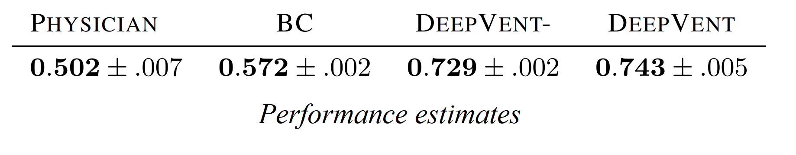

Towards Safe Mechanical Ventilation Treatment Using Deep Offline Reinforcement Learning
Flemming Kondrup*
, Thomas Jiralerspong*, Elaine Lau*, Nathan de Lara, Jacob Shkrob, My Duc Tran, Doina Precup, Sumana Basu

Abstract: Mechanical ventilation is a key form of life support for patients with pulmonary impairment. Healthcare workers are required to continuously adjust ventilator settings for each patient, a challenging and time consuming task. Hence, it would be beneficial to develop an automated decision support tool to optimize ventilation treatment. We present DeepVent, a Conservative Q-Learning (CQL) based offline Deep Reinforcement Learning (DRL) agent that learns to predict the optimal ventilator parameters for a patient to promote 90 day survival. We design a clinically relevant intermediate reward that encourages continuous improvement of the patient vitals as well as addresses the challenge of sparse reward in RL. We find that DeepVent recommends ventilation parameters within safe ranges, as outlined in recent clinical trials. The CQL algorithm offers additional safety by mitigating the overestimation of the value estimates of out-of-distribution states/actions. We evaluate our agent using Fitted Q Evaluation (FQE) and demonstrate that it outperforms physicians from the MIMIC-III dataset.
created with
Website Builder Software .